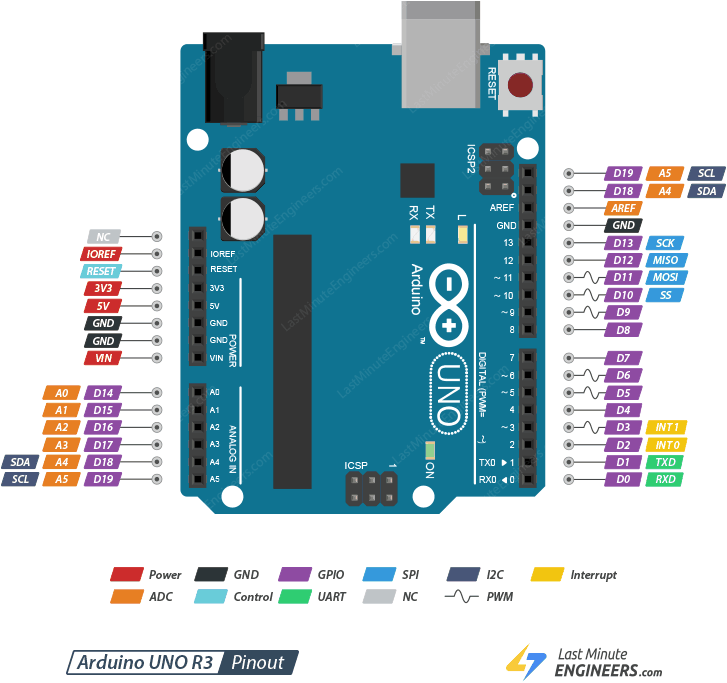
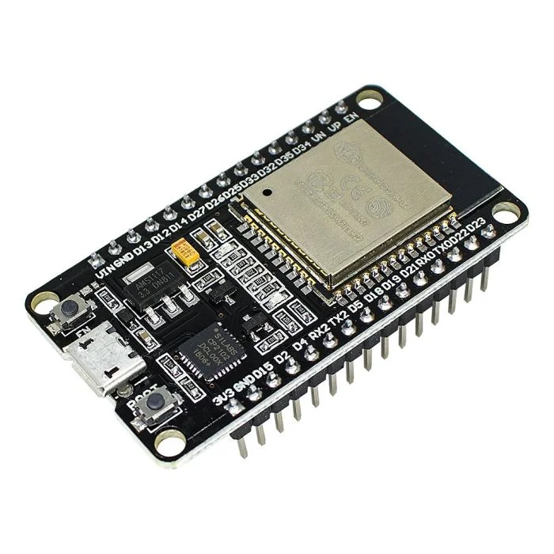

Analógico
Tensão contínua e variável, lida por analogRead() nos pinos A0–A5 com resolução de 10 bits. Usado por LM35, LDR, MQ-2, MQ-135, ACS712 e ZMPT101B.
01 — conceito
O Arduino é uma plataforma aberta de prototipagem eletrônica formada por duas partes inseparáveis: uma placa de hardware baseada em microcontrolador e um ambiente de desenvolvimento (IDE) com uma linguagem de programação simplificada, derivada de C/C++.
Seu papel em um projeto de sensoriamento é ser o elemento de aquisição e controle: ele energiza os sensores, lê os sinais que eles produzem, converte esses sinais em valores numéricos, aplica a lógica de decisão programada e aciona atuadores — relés, motores, válvulas, alarmes — ou envia os dados adiante.
Por ser open source, ter documentação farta e milhares de bibliotecas prontas, o Arduino se tornou o padrão de fato no ensino técnico e na prototipagem de soluções de Internet das Coisas. O conceito aprendido nele é o mesmo aplicado em escala industrial pelos CLPs: ler entradas, processar a lógica e comandar saídas, de forma cíclica e ininterrupta.

02 — hardware
O Uno R3 é a placa de referência da plataforma e a mais utilizada em projetos didáticos de sensoriamento. Estas são as especificações que determinam o que ela consegue medir e controlar:
A resolução de 10 bits do conversor analógico-digital é o número mais importante para quem trabalha com sensores: ela divide a faixa de 0 a 5 V em 1024 níveis (0 a 1023), o que dá um passo de aproximadamente 4,9 mV. É essa resolução que define a menor variação que o Arduino consegue enxergar em um sensor analógico como o LM35 ou o ACS712.
As saídas PWM não são analógicas de verdade: elas simulam tensões intermediárias ligando e desligando o pino muito rapidamente, técnica usada para controlar velocidade de motores, brilho de LEDs e potência de resistências.
Já as interrupções externas (pinos 2 e 3) permitem reagir a um evento no instante em que ele ocorre, sem depender do ciclo do programa — recurso indispensável para contar pulsos de sensores rápidos como o YF-S201, o encoder KY-040 e o sensor Hall A3144.

03 — funcionamento
Todo programa de Arduino (chamado de sketch) tem duas funções obrigatórias, que definem o comportamento cíclico da placa — exatamente como o ciclo de varredura (scan) de um CLP industrial:
O programa é escrito na IDE, compilado para código de máquina do ATmega328P e transferido pela USB para a memória Flash da placa. A partir daí, o Arduino roda sozinho, sem computador: basta alimentá-lo.
A leitura de um sensor acontece por duas funções básicas. digitalRead() devolve apenas dois estados possíveis, HIGH ou LOW — usada em sensores de presença, chaves e sensores de proximidade. analogRead() devolve um número inteiro de 0 a 1023, proporcional à tensão aplicada ao pino — usada em sensores como LDR, LM35, MQ-2 e ACS712.
Sensores com protocolos próprios (I2C, SPI, 1-Wire) não são lidos por essas funções
diretas: eles usam bibliotecas, que encapsulam toda a temporização e
o formato dos quadros de dados em comandos simples como sensor.begin() e
sensor.read().
// 1. Bibliotecas e constantes globais
#include <DHT.h> // biblioteca do sensor (quando necessario)
const int PINO_SENSOR = A0; // entrada analogica onde o sensor esta ligado
const int PINO_LED = 13; // saida digital que sera acionada
// 2. setup(): executado UMA vez, ao ligar ou apos o reset
void setup() {
Serial.begin(9600); // inicia a comunicacao serial (UART) a 9600 bps
pinMode(PINO_SENSOR, INPUT); // define o pino como ENTRADA
pinMode(PINO_LED, OUTPUT); // define o pino como SAIDA
}
// 3. loop(): repetido infinitamente enquanto a placa estiver ligada
void loop() {
// LER: adquire o dado do sensor (0 a 1023 no conversor de 10 bits)
int leitura = analogRead(PINO_SENSOR);
// CONVERTER: transforma a leitura bruta em grandeza fisica
float tensao = leitura * (5.0 / 1023.0);
// PROCESSAR: aplica a logica de controle programada
if (tensao > 2.5) {
digitalWrite(PINO_LED, HIGH); // ATUAR: liga a saida
} else {
digitalWrite(PINO_LED, LOW); // ATUAR: desliga a saida
}
// COMUNICAR: envia o valor para o monitor serial ou para a rede
Serial.println(tensao);
delay(1000); // aguarda 1 segundo ate a proxima leitura
}04 — comunicação de dados
O tipo de sinal do sensor determina como ele deve ser ligado e lido. Estas são as formas de comunicação usadas pelos 25 sensores do catálogo:
Tensão contínua e variável, lida por analogRead() nos pinos A0–A5 com resolução de 10 bits. Usado por LM35, LDR, MQ-2, MQ-135, ACS712 e ZMPT101B.
Apenas dois estados (HIGH/LOW), lidos por digitalRead(). Usado por PIR, sensores de proximidade indutivo e capacitivo, SW-420, boia e Hall A3144.
Barramento de 2 fios (SDA/SCL, pinos A4 e A5) que endereça vários sensores na mesma linha. Usado pelo BH1750 e por displays e módulos de relógio.
Barramento síncrono de 4 fios (SCK, MOSI, MISO e SS) e alta velocidade, nos pinos 10 a 13. Usado pelo leitor RFID MFRC522 e por cartões SD.
Comunicação assíncrona de 2 fios (RX/TX, pinos 0 e 1), usada pelo Monitor Serial, por módulos GPS, GSM e para conversar com o ESP32.
Barramentos que trafegam dados em um único condutor: 1-Wire (DS18B20) e o protocolo proprietário por temporização de pulsos do DHT11 e do DHT22.
Em painéis industriais, o sinal analógico não trafega em tensão, e sim em corrente de 4 a 20 mA. A razão é prática: a corrente não sofre queda ao longo de cabos longos e o valor mínimo de 4 mA funciona como diagnóstico — se a leitura cair a 0 mA, o sistema sabe que houve rompimento do cabo, e não que a grandeza medida chegou a zero. Transdutores industriais equivalentes aos sensores deste catálogo (temperatura, pressão, vazão, corrente) entregam o sinal nesse padrão para as entradas analógicas do CLP.
05 — programação
São 25 exemplos completos, um para cada sensor do catálogo, com esquema de ligação e código comentado. Selecione um sensor para ver o projeto correspondente:
06 — integração
Os mesmos sensores podem ser integrados a diferentes controladores. A escolha depende da necessidade de conectividade, de processamento e do custo do nó:
Microcontrolador de 8 bits sem conectividade nativa. Ideal para aquisição e controle local, com resposta em tempo real e consumo previsível. Para IoT, precisa de um módulo externo (ESP-01, Ethernet Shield ou GSM).
5 V · 10 bits · sem Wi-Fi
Microcontrolador de 32 bits com Wi-Fi e Bluetooth integrados e ADC de 12 bits. É a escolha natural para o nó IoT: lê o sensor e publica o dado diretamente na nuvem por MQTT ou HTTP. Atenção: opera em 3,3 V.
3,3 V · 12 bits · Wi-Fi + BLE
Computador completo com Linux, usado como gateway IoT: concentra os dados de vários nós, roda o broker MQTT, o banco de dados e o painel de supervisão. Não possui conversor A/D — sensores analógicos exigem um ADC externo (ADS1115).
3,3 V · GPIO · LinuxEste exemplo mostra a etapa que fecha o ciclo da Internet das Coisas: o mesmo DHT11 dos exemplos anteriores, agora publicando a leitura em um broker MQTT, de onde qualquer painel de supervisão pode assinar os dados.
// --- No IoT: ESP32 le o sensor e publica os dados via MQTT ---
#include <WiFi.h>
#include <PubSubClient.h>
#include <DHT.h>
#define PINO_DHT 4
#define TIPO_DHT DHT11
// Credenciais da rede e endereco do broker MQTT
const char* SSID = "rede-industrial";
const char* SENHA = "senha-da-rede";
const char* BROKER = "broker.hivemq.com";
const int PORTA = 1883;
// Topico onde os dados serao publicados (hierarquia planta/setor/sensor)
const char* TOPICO = "fabrica/setor-a/temperatura";
WiFiClient clienteWiFi;
PubSubClient mqtt(clienteWiFi);
DHT dht(PINO_DHT, TIPO_DHT);
// Conecta o ESP32 a rede Wi-Fi
void conectarWiFi() {
WiFi.begin(SSID, SENHA);
while (WiFi.status() != WL_CONNECTED) {
delay(500);
Serial.print(".");
}
Serial.println(" Wi-Fi conectado!");
}
// Garante a conexao com o broker, reconectando se necessario
void conectarMQTT() {
while (!mqtt.connected()) {
if (mqtt.connect("esp32-no-01")) {
Serial.println("MQTT conectado!");
} else {
delay(2000);
}
}
}
void setup() {
Serial.begin(115200);
dht.begin();
conectarWiFi();
mqtt.setServer(BROKER, PORTA);
}
void loop() {
if (!mqtt.connected()) conectarMQTT();
mqtt.loop();
float temperatura = dht.readTemperature();
float umidade = dht.readHumidity();
if (isnan(temperatura) || isnan(umidade)) {
Serial.println("Falha na leitura do sensor!");
delay(2000);
return;
}
// Monta o dado no formato JSON, padrao das plataformas IoT
char payload[80];
sprintf(payload, "{\"temperatura\":%.1f,\"umidade\":%.1f}", temperatura, umidade);
// PUBLICA: o dado sai do chao de fabrica e chega a nuvem
mqtt.publish(TOPICO, payload);
Serial.print("Publicado em ");
Serial.print(TOPICO);
Serial.print(" -> ");
Serial.println(payload);
delay(10000); // envia uma leitura a cada 10 segundos
}